Playlist
Trending Now India
Every track you're listening/should be listening to ;) Cover- Animal
Playlist
Trending Now India
Every track you're listening/should be listening to ;) Cover- Animal
Spotify
.
695,236 likes
.
75 songs, about 4 hr 30 min
#
Title
Album
1
 Pehle Bhi Main
Pehle Bhi Main
Vishal Mishra , Raj Shekhar ANIMAL 4:10
Pehle Bhi Main
Vishal Mishra , Raj Shekhar ANIMAL 4:10
2
 Husn
Husn
Anuv Jain Husn 3:37
Husn
Anuv Jain Husn 3:37
3
 Ve haaniyaan
Ve haaniyaan
Danny , Avvy Sra , Sagar Ve haaniyaan 4:00
Ve haaniyaan
Danny , Avvy Sra , Sagar Ve haaniyaan 4:00
4
 O Maahi
O Maahi
Pritam , Arijit Singh , Irshad Kamil Dunki 3:53
O Maahi
Pritam , Arijit Singh , Irshad Kamil Dunki 3:53
5
 Satranga (From "ANIMAL")
Satranga (From "ANIMAL")
Arijit Singh , Shreyas Puranik , Siddharth - Garima Satranga (From "ANIMAL") 4:31
Satranga (From "ANIMAL")
Arijit Singh , Shreyas Puranik , Siddharth - Garima Satranga (From "ANIMAL") 4:31
6
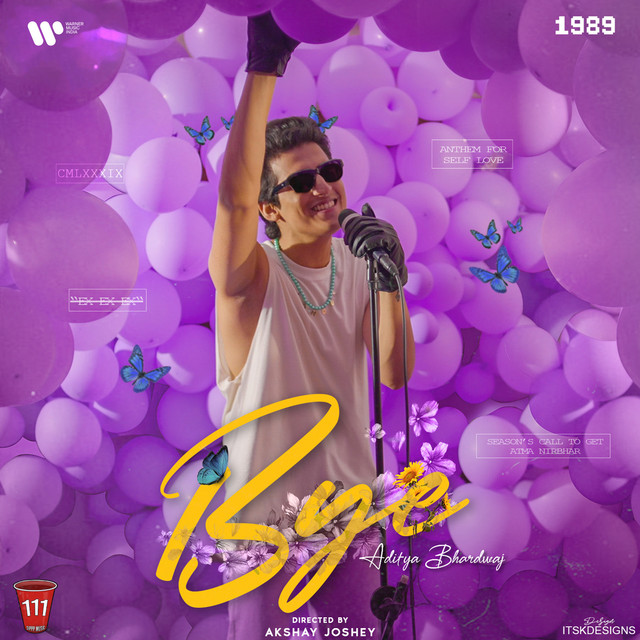
Bye
Aditya Bhardwaj Bye 2:54
Aditya Bhardwaj Bye 2:54
7
 Mera Safar
Mera Safar
Iqlipse Nova Mera Safar 3:10
Mera Safar
Iqlipse Nova Mera Safar 3:10
8
 Tu hai kahan
Tu hai kahan
AUR Tu hai kahan 4:23
Tu hai kahan
AUR Tu hai kahan 4:23
9
 Heer Ranjha
Heer Ranjha
Rito Riba , Rajat Nagpal , Rana Sotal Heer Ranjha 3:43
Heer Ranjha
Rito Riba , Rajat Nagpal , Rana Sotal Heer Ranjha 3:43
10
 katchi Sera - From "Think Indie"
katchi Sera - From "Think Indie"
Sai Abhyankkar katchi Sera - From ("Think Indie") 3:01
katchi Sera - From "Think Indie"
Sai Abhyankkar katchi Sera - From ("Think Indie") 3:01
11
 Aise Kyun - Ghazal Version
Aise Kyun - Ghazal Version
Rekha Bhardwaj , Anurag Saikia , Raj Shekhar , Mis... Missmatched: Season 2 (Soundtrack fr... 5:29
Aise Kyun - Ghazal Version
Rekha Bhardwaj , Anurag Saikia , Raj Shekhar , Mis... Missmatched: Season 2 (Soundtrack fr... 5:29
12
 Greedy
Greedy
E Tate McRae Greedy 2:11
Greedy
E Tate McRae Greedy 2:11
13
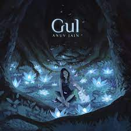
Gul
Anuv Jain Gul 3:37
Anuv Jain Gul 3:37
14
 Paint The Town Red
Paint The Town Red
E Doja Cat Scarlet 3:50
Paint The Town Red
E Doja Cat Scarlet 3:50
15
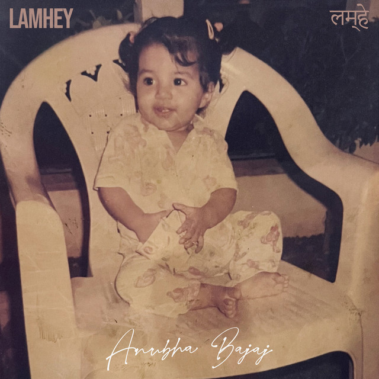
Lamhey
Anubha Bajaj Lamhey 2:28
Anubha Bajaj Lamhey 2:28
16
 Kaise Ab Kahein - From "Gutar Gu"
Kaise Ab Kahein - From "Gutar Gu"
Gaurav Chatterji , Aasa Singh , Hansika Pareek , H... Kaise Ab Kahein (From "Gutar Gu") 2:00
Kaise Ab Kahein - From "Gutar Gu"
Gaurav Chatterji , Aasa Singh , Hansika Pareek , H... Kaise Ab Kahein (From "Gutar Gu") 2:00
17
 Ghodey Pe Sawaar (From "Qala")
Ghodey Pe Sawaar (From "Qala")
Amit Trivedi , Amitabh Bhattacharya , Sireesha Bh... Ghodey Pe Sawaar (From "Qala") 3:13
Ghodey Pe Sawaar (From "Qala")
Amit Trivedi , Amitabh Bhattacharya , Sireesha Bh... Ghodey Pe Sawaar (From "Qala") 3:13
18
 Saadi Galli Aaja
Saadi Galli Aaja
Rochak Kohli , Ayushmann Khurrana , Neeti Mohan Nautanki Saala ! 4:13
Saadi Galli Aaja
Rochak Kohli , Ayushmann Khurrana , Neeti Mohan Nautanki Saala ! 4:13
19
Kho Gaye
Taaruk Raina , Mismatched - Cast Missmatched: Season 2 (Soundtrack fr... 3:17
Kho Gaye
Taaruk Raina , Mismatched - Cast Missmatched: Season 2 (Soundtrack fr... 3:17
20
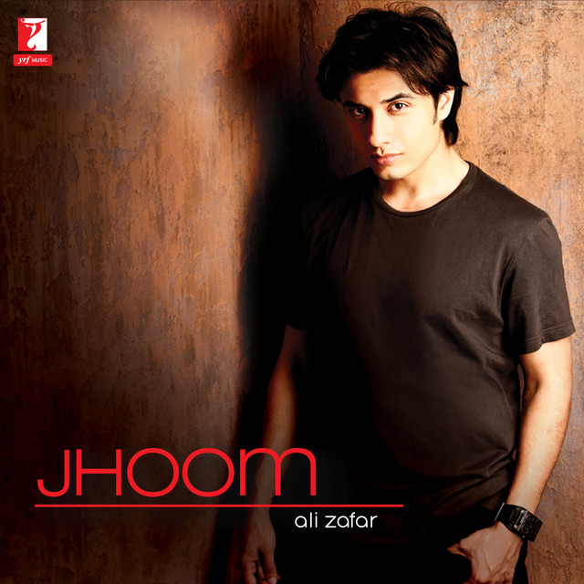
Jhoom - R&B Mix
Ali Zafar Jhoom 4:58
Ali Zafar Jhoom 4:58
21
Noor E Khuda
Shankar-Ehsaan-Loy , Adnan Sami , Shankar Mah... My Name Is Khan (Original Motion Pic... 6:37
Shankar-Ehsaan-Loy , Adnan Sami , Shankar Mah... My Name Is Khan (Original Motion Pic... 6:37
22
 Farq aai
Farq aai
Suzonn Farq hai 3:04
Farq aai
Suzonn Farq hai 3:04
23
 Rangisari
Rangisari
Kanishk Seth , Kavita Seth Jugjugg Jeeyo 3:43
Rangisari
Kanishk Seth , Kavita Seth Jugjugg Jeeyo 3:43
24
 Ik Lamha
Ik Lamha
Azaan Sami Khan Main Tera 4:18
Ik Lamha
Azaan Sami Khan Main Tera 4:18
25
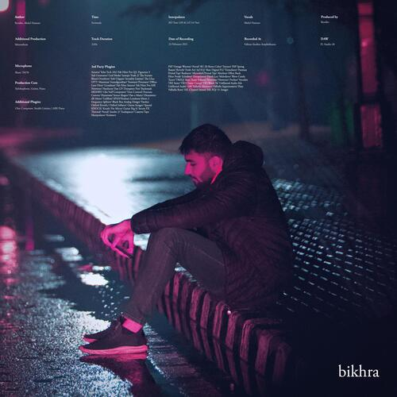
Bikhra
Abdul Hannan , Rovalio Bikhra 2:48
Abdul Hannan , Rovalio Bikhra 2:48
26
 Pehla Pyaar
Pehla Pyaar
Vishal Mishra , Armaan Malik Kabir singh 4:32
Pehla Pyaar
Vishal Mishra , Armaan Malik Kabir singh 4:32
27
 Tere Bin
Tere Bin
Rabbi Shergill Rabbi 5:22
Tere Bin
Rabbi Shergill Rabbi 5:22
28
 Kya Mujhe Pyar Hai
Kya Mujhe Pyar Hai
KK Wo Lamhe 4:26
Kya Mujhe Pyar Hai
KK Wo Lamhe 4:26
29
 Hua Main (From "ANIMAL")
Hua Main (From "ANIMAL")
Raghav Chaitanya , Manoj Muntashir , Pritam Hua Main (From "ANIMAL") 4:37
Hua Main (From "ANIMAL")
Raghav Chaitanya , Manoj Muntashir , Pritam Hua Main (From "ANIMAL") 4:37
30
 Aankhon Se Batana
Aankhon Se Batana
Dikshant Aankhon Se Batana 3:41
Aankhon Se Batana
Dikshant Aankhon Se Batana 3:41
31
 Zilhaal e Miskin
Zilhaal e Miskin
E Javed-Mohsin , Vishal Mishra , Shreya Ghoshal Zilhaal e Miskin 4:03
Zilhaal e Miskin
E Javed-Mohsin , Vishal Mishra , Shreya Ghoshal Zilhaal e Miskin 4:03
32
 Tum Kya Mile (From "Rocky Aur Rani Kii Pre...
Tum Kya Mile (From "Rocky Aur Rani Kii Pre...
Pritam , Arijit Singh Shreya Ghoshal Amitabh Bhat... Rocky Aur Rani Kii Prem Kahaani 4:37
Tum Kya Mile (From "Rocky Aur Rani Kii Pre...
Pritam , Arijit Singh Shreya Ghoshal Amitabh Bhat... Rocky Aur Rani Kii Prem Kahaani 4:37
33
Chidiya
Vilen Chidiya 4:13
Vilen Chidiya 4:13
34
 Khuda Jaane
Khuda Jaane
Vishal-Shekhar , KK , Shilpa Rao Anvita Dutt Guptan Bachna Ae Haseeno 5:33
Khuda Jaane
Vishal-Shekhar , KK , Shilpa Rao Anvita Dutt Guptan Bachna Ae Haseeno 5:33
35
 Kali Kali Zulfon Ke (Lo-Fi)
Kali Kali Zulfon Ke (Lo-Fi)
Madhur Sharma , Swapnil Tare , Nusrat Fateh Ali k... Kali Kali Zulfon Ke (Lo-Fi) 1:17
Kali Kali Zulfon Ke (Lo-Fi)
Madhur Sharma , Swapnil Tare , Nusrat Fateh Ali k... Kali Kali Zulfon Ke (Lo-Fi) 1:17
36
 Apa Fer Milaangey
Apa Fer Milaangey
Savi Kahlon Apa Fer Milaangey 3:33
Apa Fer Milaangey
Savi Kahlon Apa Fer Milaangey 3:33
37
 Deva Deva (From "Brahmastra")
Deva Deva (From "Brahmastra")
pritam , Arijit Singh , Amitabh Bhattacharya Jonita... Deva Deva (From "Brahmastra") 4:39
Deva Deva (From "Brahmastra")
pritam , Arijit Singh , Amitabh Bhattacharya Jonita... Deva Deva (From "Brahmastra") 4:39
38
 Jugnu
Jugnu
Badshah , Nikhita Gandhi Jugnu 3:50
Jugnu
Badshah , Nikhita Gandhi Jugnu 3:50
39
 Shauq
Shauq
Amit Trivedi , Varun Grover , Shahid Mallya , Sireesh... Qala (Music From The Netflix Film) 4:16
Shauq
Amit Trivedi , Varun Grover , Shahid Mallya , Sireesh... Qala (Music From The Netflix Film) 4:16
40
 Barbaadiyan
Barbaadiyan
Sachet Tandon , Nikhita Gandhi , Madhubanti Bagc... Shiddat 3:50
Barbaadiyan
Sachet Tandon , Nikhita Gandhi , Madhubanti Bagc... Shiddat 3:50
41
 Desi Kalakaar
Desi Kalakaar
Yo Yo Honey Singh Desi Kalakaar 4:13
Desi Kalakaar
Yo Yo Honey Singh Desi Kalakaar 4:13
42
Rasiya (From "Brahmastra")
Pritam , Shreya Ghoshal , TUSHAR JOSHI Rasiya (From "Brahmastra") 4:25
Pritam , Shreya Ghoshal , TUSHAR JOSHI Rasiya (From "Brahmastra") 4:25
43
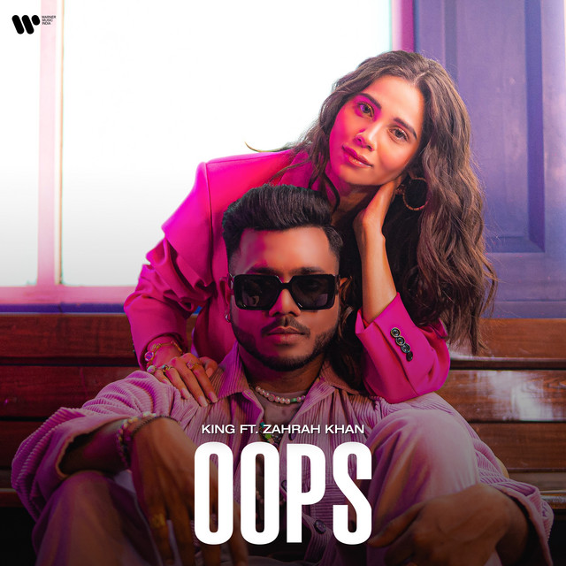
OOPS
King OOPS 2:43
King OOPS 2:43
44
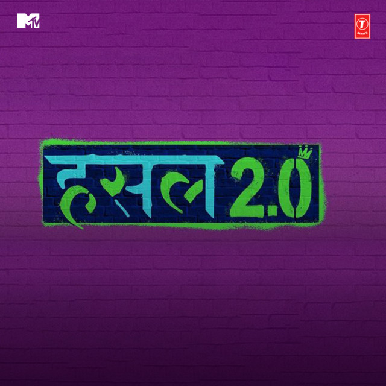
Jaadugar
Paradox Mtv Hustle 2.0 3:12
Paradox Mtv Hustle 2.0 3:12
45
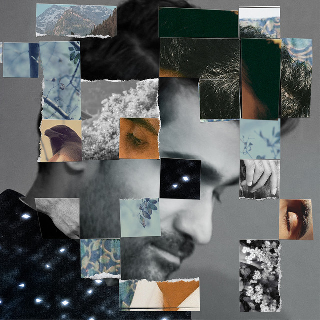
Mulaqat
Prateek Kuhad Mulaqat 4:06
Prateek Kuhad Mulaqat 4:06
46
 Chaand Baaliyan
Chaand Baaliyan
Aditya A Chaand Baaliyan 1:43
Chaand Baaliyan
Aditya A Chaand Baaliyan 1:43
47
 Lover
Lover
Dilijit Dosanjh MoonChild Era 3:10
Lover
Dilijit Dosanjh MoonChild Era 3:10
48
Ektarfa
King Ektarfa 3:50
King Ektarfa 3:50
49
 Tere Pyaar Mein
Tere Pyaar Mein
Pritam , Arijit Singh , Amitabh Bhattacharya , Nikhit... Tere Pyaar Mein (From "Tu Jhoothi Mai... 4:26
Tere Pyaar Mein
Pritam , Arijit Singh , Amitabh Bhattacharya , Nikhit... Tere Pyaar Mein (From "Tu Jhoothi Mai... 4:26
50
 Cold Hours
Cold Hours
Aleemrk , Umair Cold Hours 3:26
Cold Hours
Aleemrk , Umair Cold Hours 3:26
51
 Janiye (From the Netflix Film "Chor Nikal Ke Bh...
Janiye (From the Netflix Film "Chor Nikal Ke Bh...
Vishal Mishra , Rashmeet Kaur Janiye (From the Netflix Film "Chor Nikal Ke Bhaga") 3:43
Janiye (From the Netflix Film "Chor Nikal Ke Bh...
Vishal Mishra , Rashmeet Kaur Janiye (From the Netflix Film "Chor Nikal Ke Bhaga") 3:43
52
 Ram Siya Ram (From "Adipurush")
Ram Siya Ram (From "Adipurush")
Sachet-Parampara , Sachet Tandon , Parampara T... Ram Siya Ram (From "Adipurush") 3:50
Ram Siya Ram (From "Adipurush")
Sachet-Parampara , Sachet Tandon , Parampara T... Ram Siya Ram (From "Adipurush") 3:50
53
 Yadav Brand 2
Yadav Brand 2
Sunny Yaduvanshi , AK Rok , Nitesh Ujoli Yadav Brand 2 2:54
Yadav Brand 2
Sunny Yaduvanshi , AK Rok , Nitesh Ujoli Yadav Brand 2 2:54
54
 Ve Kamleya - Asees Version
Ve Kamleya - Asees Version
Asees Kaur , Pritam Ve Kamleya - Asees Version 3:00
Ve Kamleya - Asees Version
Asees Kaur , Pritam Ve Kamleya - Asees Version 3:00
55
Saari Duniya Jalaa Denge
Jaani , B Praak ANIMAL 3:02
Saari Duniya Jalaa Denge
Jaani , B Praak ANIMAL 3:02
56
 Timro Pratiksa
Timro Pratiksa
Shallum Lama Timro Pratiksa 4:01
Timro Pratiksa
Shallum Lama Timro Pratiksa 4:01
57
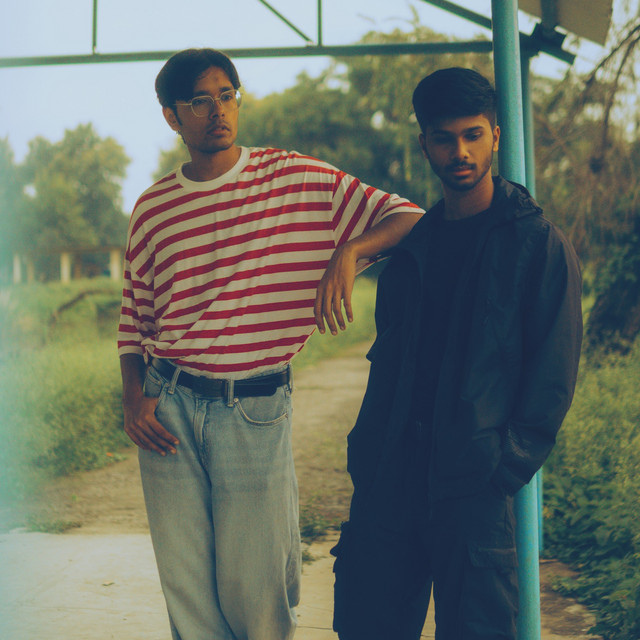
Akhiyaan
Mitraz Akhiyaan 3:11
Mitraz Akhiyaan 3:11
58
 Besharam Rang (From "Pathaan")
Besharam Rang (From "Pathaan")
Vishal-Shekhar , Shilpa Rao , Caralisa Monteiro , Vishal Dadlani Besharam Rang (From "Pathaan") 4:18
Besharam Rang (From "Pathaan")
Vishal-Shekhar , Shilpa Rao , Caralisa Monteiro , Vishal Dadlani Besharam Rang (From "Pathaan") 4:18
59
Nasha (Equals Sessions)
Faridkot , Amar Jalal Nasha (Equals Sessions) - Single 4:47
Faridkot , Amar Jalal Nasha (Equals Sessions) - Single 4:47
60
 Malang Sajna
Malang Sajna
Sachet Tandon , Parampara Tandon , Kumaar , Sac... Malang Sajna 2:41
Malang Sajna
Sachet Tandon , Parampara Tandon , Kumaar , Sac... Malang Sajna 2:41
61
 Kina Chir
Kina Chir
The PropheC The Lifestyle 3:36
Kina Chir
The PropheC The Lifestyle 3:36
62
 Ram Darshan
Ram Darshan
Narci Ram Setu 5:09
Ram Darshan
Narci Ram Setu 5:09
63
 Laal Peeli Akhiyaan (From "Teri Baaton Mein Ais...
Laal Peeli Akhiyaan (From "Teri Baaton Mein Ais...
Tanishk Bagchi , Romy , Neeraj Rajawat Laal Peeli Akhiyaan (From "Teri Baaton Mein Aisa Uljha... 3:08
Laal Peeli Akhiyaan (From "Teri Baaton Mein Ais...
Tanishk Bagchi , Romy , Neeraj Rajawat Laal Peeli Akhiyaan (From "Teri Baaton Mein Aisa Uljha... 3:08
64
 Dil Ko Karaar Aaya (From "Sukoon")
Dil Ko Karaar Aaya (From "Sukoon")
Yasser Desai , Neha Kakkar , Rajat Nagpal Dil Ko Karaar Aaya (From "Sukoon") 3:51
Dil Ko Karaar Aaya (From "Sukoon")
Yasser Desai , Neha Kakkar , Rajat Nagpal Dil Ko Karaar Aaya (From "Sukoon") 3:51
65
 Phir Aur Kya Chahiye (From "Zara Hatke Zar...
Phir Aur Kya Chahiye (From "Zara Hatke Zar...
Sachin-Jigar , Arijit Singh , Amitabh Bhattacharya Phir Aur Kya Chahiye (From "Zara Hatke Zara Bachke") 4:26
Phir Aur Kya Chahiye (From "Zara Hatke Zar...
Sachin-Jigar , Arijit Singh , Amitabh Bhattacharya Phir Aur Kya Chahiye (From "Zara Hatke Zara Bachke") 4:26
66
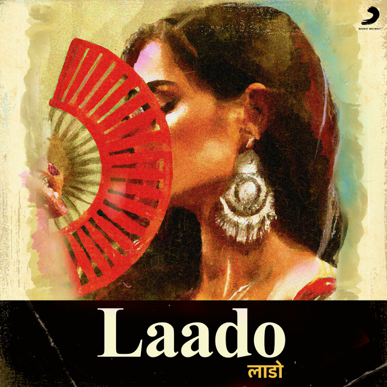
Laado
MC SQUARE , Hiten Laado 2:28
MC SQUARE , Hiten Laado 2:28
67
 Ishq Nachaawe - From "Kho Gaye Hum Kahan"
Ishq Nachaawe - From "Kho Gaye Hum Kahan"
Karan Kanchan , Rashmeet Kaur , Yashraj Kho Gaye Hum Kahan (Original Motion Picture Soundt... 3:41
Ishq Nachaawe - From "Kho Gaye Hum Kahan"
Karan Kanchan , Rashmeet Kaur , Yashraj Kho Gaye Hum Kahan (Original Motion Picture Soundt... 3:41
68
 Sadqay
Sadqay
Aashir Wajahat , NAYEL , Nehaal Naseem Sadqay 2:43
Sadqay
Aashir Wajahat , NAYEL , Nehaal Naseem Sadqay 2:43
69
 Bahara X
Bahara X
Ezu Bahara X 2:47
Bahara X
Ezu Bahara X 2:47
70
 Raanjhan Aaya
Raanjhan Aaya
Masaba Akshay & IP Raanjhan Aaya 2:43
Raanjhan Aaya
Masaba Akshay & IP Raanjhan Aaya 2:43
71
 KALESHI CHORI
KALESHI CHORI
E DG IMMORTALS , Raga , Harjas Harjaayi , DARK HORSE KALESHI CHORI 3:31
KALESHI CHORI
E DG IMMORTALS , Raga , Harjas Harjaayi , DARK HORSE KALESHI CHORI 3:31
72
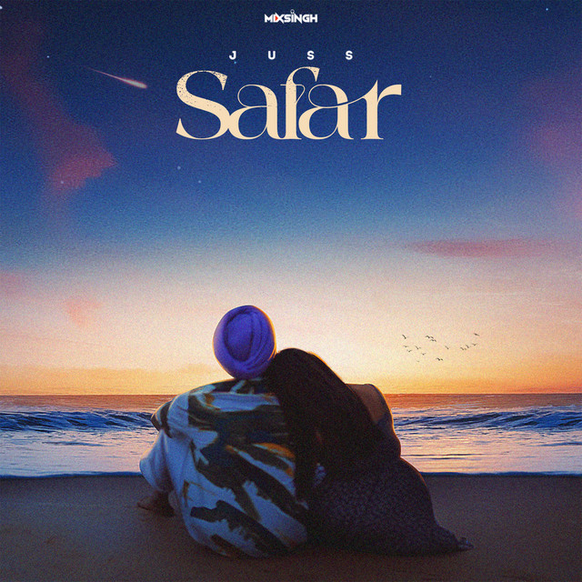
Safar
Juss , MixSingh Safar 3:17
Juss , MixSingh Safar 3:17
73
Bijlee Bijlee
Harrdy Sandhu Bijlee Bijlee 2:48
Harrdy Sandhu Bijlee Bijlee 2:48
74
Pagol
Deep Jandu , Bohemia Pagol 3:39
Deep Jandu , Bohemia Pagol 3:39
75
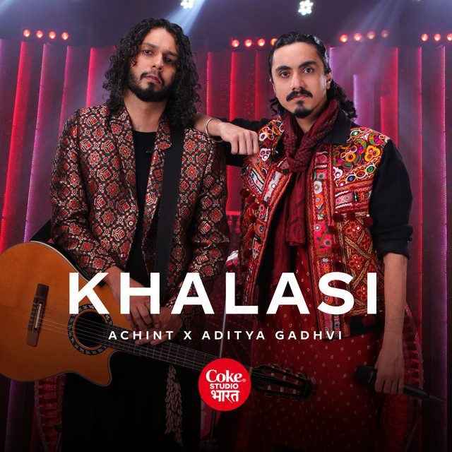
Khalasi | Coke Studio Bharat
Aditya Gadhvi , Achint Khalasi | Coke Studio Bharat 4:18
Aditya Gadhvi , Achint Khalasi | Coke Studio Bharat 4:18
May 15, 2021
© 2021 Sidhu Moose Wala
℗ 2021 Sidhu Moose Wala
You might also like

Moosetape
By Spotify

No Name
By Spotify

Desi Hits
By Spotify

Pbx 1
By Spotify
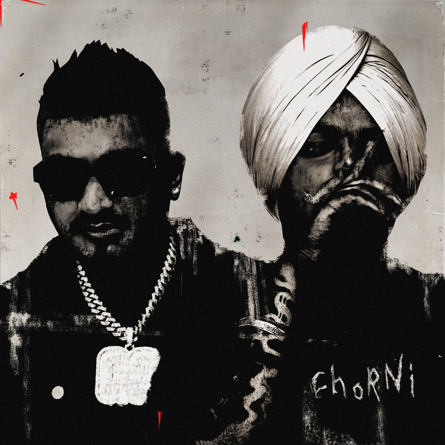
Chorni
By Spotify